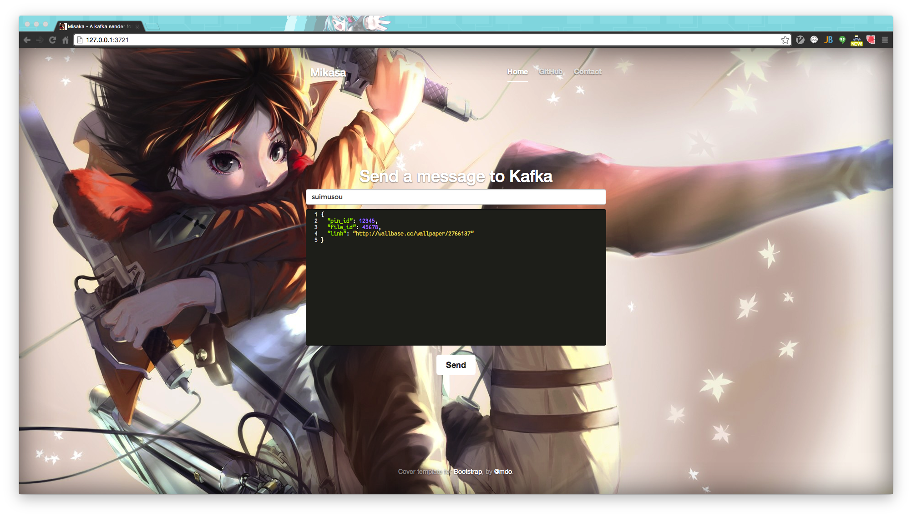

开发测试时给 Kafka 发消息的 UI 发送器——Mikasa
起 (灬ºωº灬)
说来话长，自从入了花瓣，整个人就掉进连环坑了。
后端元数据采集是用 Storm 来走拓扑流程的，又因为 @Zola 不是很喜欢 Java，所以退而求其次选择了 Clojure，所以正在苦逼地学习 Clojure 和 Storm 中。
目前来说外面的 Storm 拓扑的 Spout 是从 Kafka 中流入数据的。但是我们要给 Kafka 发送测试数据的时候，就需要跑到 Kafka 的测试服务器打开它的一个发送脚本进去发送，非常蛋疼；要么就是直接通过特定的发送业务逻辑代码测试，没有一个稍微泛一点的测试用发数据工具，于是 Mikasa 诞生了。
承 (ﾟ3ﾟ)～♪
讲到 Mikasa 名字的来源，实际上看过『巨人』都知道，八块腹肌的三爷。
这里小爆料一下，又拍云和花瓣（都是同宗）的项目名很大部分都是以海贼王的角色命名的——尤其是又拍云更是丧心病狂。不过这让我这个伪·二次元的小伙伴异常欣喜，因为我也能用各种啪啪啪来命名我的角色了。比如我的第一个 Storm 相关的项目就叫 Suwako，即诹访子大人，因为脑子需要各种跳，于是就对诹访子大人这位青蛙之神各种膜拜。
至于这个发射器为什么要用三爷呢？因为三爷相当于先锋军哇！
这里的 Kafka 依赖用了搜狐小伙伴 @Crzidea 他们团队写的模块。
转 (ㄏ￣▽￣)ㄏ ㄟ(￣▽￣ㄟ)
于是，话也不多说，直接上 repo 吧。在公司内网的 gitlab 里面有一份，还有一个 repo 在 GitHub 上。
Download || Clone
如果要直接下载的话就用这个链接：
如果要克隆的话就：
git clone https://github.com/XadillaX/mikasa.git |
Setup
直接安装一下依赖：
npm install |
Configuration
接下去就是简单的配置一下了，其实就是配置下配置文件。由于是快速开发，直接用了自己之前的 Exframess 框架，所以很多无用代码也懒得删了。
config/server.js
这里其实别的也不用动，主要是修改下端口即可。
config/kafka.js
这里修改一下 Kafka 的 Connection String 就好了。
Start up
最后启动服务即可。
node app.js |
合 (ﾉ◕ヮ◕)ﾉ*:･ﾟ✧
最后的效果是这样的：

只要在 Topics 栏里面输入你要发送的 Topic，然后再下面的消息栏里面输入你要传的消息（字符串），最后点击 Send 即可将你的测试消息发进 Kafka 中去了。
托大家的福，今天我的 Suwako 整个逻辑终于跑通了，撒花！ε٩(๑> ₃ <)۶з